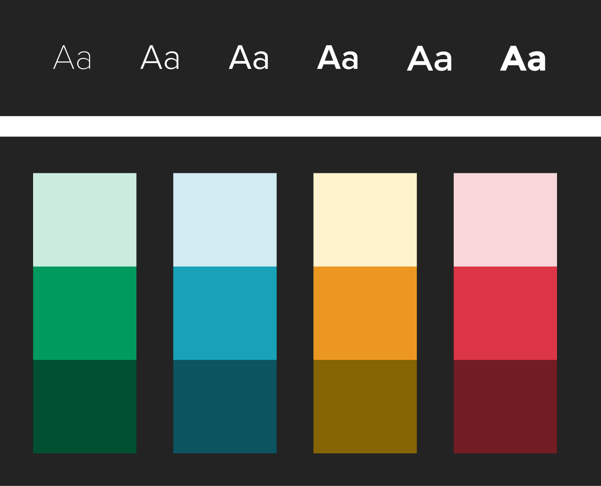

Introduction
Pakistan Single Window is an enterprise that set out to build a system that would improve the efficiency of Pakistan’s Trade System and digitize various government and federal ministries. It will comply with the Single Window standards of other countries and provide a single gateway for trade-related activities.
As a User Experience Engineer my goal was to design a modular system to help the team ideate and develop most of PSW's functions with ease and efficiency.
Challenges
Consistency
To provide a consistent experience across all modules and all platforms.
Reusability
To increase reusability while having room for customizations
Efficiency
To reduce the time it takes for the team to ideate on newer modules
Journey
Mapping Architecture
Initially, we created an information architecture to map out the main functions. This activity gave us an insight into the scale and user flows.
Working with Requirement Artifacts
After analyzing requirement artifacts like business requirements, and requirement traceability matrices, we improved the user flow, ensuring they align with the business and product goals.
Auditing Component Library
After understanding the scale, functions, and user flows, we audited the existing component library and mapped out the component's usage in various modules.
Identifying Patterns
It was important for us to understand not only how many times each component is being used but also how they are being used. This led us to identify various interface patterns within our application.
Foundation
By following the atomic approach, we focused initially on the building blocks of our design system, keeping scalability in mind. All of our components are built using these properties. Since the design system is for a web application, we kept the foundation platform agnostic.

We introduced a color scheme along with a typographic scale that ensured our company's branding and messaging. We also made sure that the colors chosen provided enough contrast through WCAG 2.0 guide by testing these colors in both light and dark schemes to make sure that the teams using our system have multiple options.
Component Library
After intensive research and inventory, we compiled all of our components within the system in the form of a library. Since we are using React JS on the front end, it is easier to isolate components on the development side as well.

Along with each refined component we provided all the properties like padding, border, and all the possible states within the component.
Pattern and Processes
Since our application had multiple instances where reusable processes were required, we identified those patterns & processes at the start and provided them within our design system.

Impact
A clear difference in time was observed [approx 40% average] between modules developed using our new design system and modules developed and designed from scratch.
Whats Next?
Benchmarks & Testing
Our Design System provides a guideline to benchmark our ideas and test and improve the system for new cases.
Improvement and Documentation
We continue to improve the documentation and develop use cases to understand the application and help the engineering team use the system efficiently.